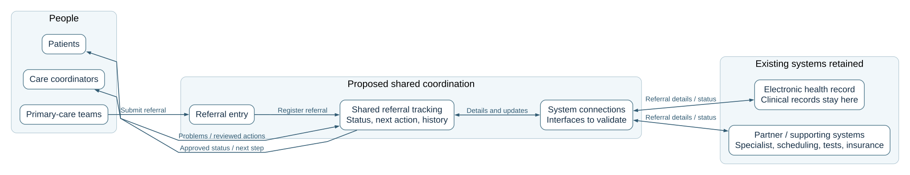

Healthcare referral modernization
Understand the report.
Explain it with confidence.
A plain-English speaking guide for all five deliverables. Use the final submission as the decision pack and this guide to prepare your explanation.
The whole project in one sentence
Help referrals move forward without replacing the clinical system.
Your opening“Today, referrals move across several systems, so staff often chase information and patients do not know the next step. We propose shared referral coordination around the existing clinical system, with clear responsibility and human follow-up.”
A referral means sending a patient to another care team, such as a family doctor referring someone to a heart specialist. This project addresses tracking and hand-offs; clinical decisions remain with authorized staff.
D1What is wrong, and how will we measure success?
D2Which approach should we choose, and why?
D3How do people and systems work together?
D4What did the working proof actually establish?
D5What happens next, and what could go wrong?
Keep three kinds of statements separate
| Scenario facts | Proposed design | Verified POC behavior |
|---|
| The scenario reports 15–20% manual follow-up/rework, requires retaining the EHR in Phase 1, and expects an initial usable capability in about 12 weeks. | Shared coordination, selected interfaces, accountable roles, pilot scope and controls still require agreement and validation. | The local application passed 17 rule tests and 13 browser checks. Those results do not establish real integrations or improved care outcomes. |
Page 1 · Understand the need
D1 — Problem & success snapshot
Main message: referrals are difficult to track because information and responsibility are spread across teams and systems.
Who faces the problem?
- Patients: delays, repeated calls and unclear next steps.
- Primary-care teams: start referrals but cannot consistently see later progress.
- Care coordinators: chase missing details and updates.
- Specialists and partners: may receive incomplete information or inconsistent updates.
What limits the solution?
- Keep the electronic health record (EHR).
- Continue normal care during changes.
- Aim for an initial capability in about 12 weeks.
- Protect necessary patient information.
- Keep human escalation and review.
What do “assumptions to validate” mean?
We still need to confirm the first referral process, system connections, common IDs/status meanings, available measurement data and governance. These are dependencies to check, not established capabilities.
How will we know it helps?
| Measure | Simple explanation |
|---|
| Less follow-up/rework | A smaller share of referrals needs avoidable chasing or correction. |
| Faster turnaround | Less time to reach a clearly agreed milestone. |
| Clearer status/responsibility | Staff can see where a referral is and who acts next. |
| Fewer incomplete hand-offs | Fewer referrals remain unresolved beyond an agreed time. |
| More complete action records | Important actions show what happened, when and who acted. |
Baseline is starting performance. Target is the agreed improvement goal. Data source tells us where evidence comes from; the measure owner collects, checks and reports it. Suggested owners are proposed assignments.
Say this to the jury“D1 establishes the patient and staff problem, the limits we must respect, and five measures of improvement. We have not invented targets: we first need reliable baselines and business agreement.”
The 15–20% figure comes from the fictional scenario. We have not independently measured it in a hospital or demonstrated a reduction.
Page 2 · Defend the choice
D2 — Architecture options & decision
Main message: choose the approach that best addresses cross-system coordination while preserving the EHR.
Option A: coordinate around the EHR
Add shared tracking across existing systems. Staff see progress, responsibility and follow-up tasks.
Potential advantage: a broader view across organizations.
Cost of the choice: another capability to support, secure and keep consistent.
Option B: improve coordination inside the EHR
Improve its referral work queues and connect selected partners directly.
Potential advantage: fewer extra workspaces for staff.
Dependency: safe EHR changes and sufficient partner visibility are not established.
Why conditionally prefer A?
The problem extends beyond one system. Shared tracking could expose missing or delayed hand-offs across providers while leaving clinical records in place. This addresses D1's visibility and follow-up needs more directly, provided interfaces and responsibilities can be agreed.
What are we accepting?
- Additional operating and support work.
- Another patient-information boundary to protect.
- Work to keep identities, statuses and responsibilities consistent.
When would we change the decision? If necessary interfaces are unavailable, partners cannot participate, roles are unresolved, or a small EHR change is demonstrably safer, narrow the scope or reconsider B. Reduce scope if meeting 12 weeks would risk care continuity.
Say this to the jury“We compared adding shared coordination with improving the EHR itself. We conditionally prefer shared coordination because the gaps cross system boundaries. We accept extra operating and data-protection work, and will revisit the decision if discovery does not support it.”
The scenario gives D2 25 marks, the largest single allocation. Focus on the reason for the choice, the fair alternative and the trade-offs—not reading every table cell.
Page 3 · Explain the picture
D3 — Target-state architecture
Main message: shared tracking connects referral progress without becoming the clinical record.

Point to the diagram in this order
- People on the left: primary care starts the referral; coordinators handle follow-up; patients receive approved updates.
- Referral entry: brings referrals into the selected process.
- Shared tracking: shows status, next action and history.
- System connections: exchange permitted details and updates. Two-way arrows show information returning as well as going out.
- Existing systems: the EHR holds clinical records; specialist, scheduling, test and insurance systems retain their responsibilities.
Specialist teams use their existing systems/channels; exact channels need confirmation. Access control, necessary-data protection, action records and recovery apply across the design.
Say this to the jury“Read this left to right: a care team submits a referral, shared tracking coordinates progress, and connections exchange updates with existing systems. Problems return to coordinators. Clinical records remain in the EHR, while the new capability stores coordination information.”
The diagram is the proposed target. The POC implements entry, local tracking and follow-up; real system connections and patient updates have not been built.
Page 4 · Show evidence honestly
D4 — Working local application
Main message: test whether incomplete and delayed referrals stay visible and human decisions are recorded.
What works?
- Add and correct referrals.
- Record external hand-offs and receipt references.
- Show overdue follow-up using saved deadlines.
- Require a person/reason before retry approval.
- Keep records/history across refresh.
- Detect duplicates and conflicting entries.
- Search, filter, export and explicitly reset.
What does the evidence say?
17 rule tests and 13 browser checks passed. Tests cover correction, persistence, deadlines, recorded evidence, retry, failures, conflicts, export and reset.
Timing tests use a controlled clock to finish quickly. The application uses actual device time and has no time-advance control.
The results concern local software behavior. They do not prove faster care, reduced rework, real delivery or clinical readiness.
A practical four-minute walkthrough
Suggested timing only. Use fictional entries; for a real deployment, references must correspond to external actions and confirmations.
| Step | What to do | What to explain |
|---|
| 1 · Missing details | Add PRACTICE-002, receiving provider Example Skin Clinic, specialty blank, person Alex Rao. Then edit specialty to Dermatology. | Incomplete details block hand-off. Correction makes the same record ready. |
| 2 · Waiting and follow-up | Set follow-up to 1 minute before a new hand-off. Add PRACTICE-003, Orthopedics, Example Joint Centre. Record hand-off reference PRACTICE-H-003-A. | The application records an action completed elsewhere; it sends no message. The one-minute setting is for practice, not a business target. |
| 3 · While time passes | Show history and refresh persistence. Return after the saved deadline. | Real elapsed time makes the record overdue. There are no closed-app notifications. |
| 4 · Human retry | Approve retry as Alex Rao, reason Receiving office contacted; another attempt requested. Record another hand-off PRACTICE-H-003-B, then receipt PRACTICE-ACK-003. | The same referral has two attempts and a recorded decision. A receipt is not completed care. |
| 5 · Optional finish | Show export and the reset confirmation dialog; cancel unless you intend to clear practice records. Restore follow-up to 30 minutes afterward. | Reset requires RESET. Export has no automatic import/restore. |
Say this before opening the application“We built a working local slice of the coordination workflow. It preserves records, supports correction, and requires recorded human decisions for retry. I will show a missing-information case and an overdue hand-off; the app records external actions and does not connect to a hospital.”
State the limits clearly
Browser storage is not protected central storage or a tamper-proof audit. Person names are typed labels. Receipts are recorded statements, not independently verified partner messages. Real interfaces, patient matching, patient notifications, clinical validation and production recovery remain unproven.
ApplicationFull instructions and examplesRule evidenceBrowser evidence
Page 5 · Make the next steps credible
D5 — Delivery & risk plan
Main message: progress through evidence and approval gates rather than treating the POC as ready for operational use.
| Phase | Simple explanation | What must be true before proceeding? |
|---|
| Now | Select one referral process, agree roles, investigate connections and define measurements. | Viable exchange, safe escalation, an agreed scope and baselines/targets. |
| Next | Build a limited connected capability; add authentication, protected storage/history, recovery and monitoring. Prepare a controlled pilot. | Interfaces, matching, access, restoration, fallback and care continuity proven for the selected scope; required approval obtained. |
| Later | Review pilot results and add referral types or partners only where justified. Consider AI separately. | Stable operations, effective controls, partner readiness and evidence supporting expansion. |
Explain the five risks with one phrase each
- No clear owner: a referral can stall—agree responsibility and escalation.
- No usable connection: updates cannot be exchanged—test interfaces early and narrow scope if needed.
- Wrong identity or status: staff may act on incorrect information—check matching, meanings and receipt references.
- Lost or exposed information: local storage is inadequate for clinical operation—require protected storage, access and tested recovery.
- Transition overload: parallel work or excessive scope threatens delivery—train staff, retain fallback and limit the pilot.
Proposed accountable owners are role suggestions, not assigned people. The 12-week expectation is not a guaranteed delivery date.
Explain AI's contribution
AI helped draft the pack, simplify the diagram, build the application and create checks. User review shaped the output. Automated tests establish software behavior; clinical, privacy and business acceptance remain human responsibilities. The application has no runtime AI.
Your closing“Our next step is a bounded, approved pathway with proven interfaces and controls. We will evaluate it against agreed measures before expanding. The POC increases confidence in the workflow rules, but operational readiness and patient outcomes still need evidence.”
Rehearsal aid
A five-minute report explanation
Use this as a suggested structure, then add the application walkthrough separately if the jury allows time.
| Suggested time | Page | Speaking cue |
|---|
| 0:00–0:45 | D1 | “Patients wait and staff chase updates. The scenario reports 15–20% follow-up/rework. We retain the EHR, protect information, and measure five outcomes.” |
| 0:45–1:50 | D2 | “We compared shared coordination with EHR-centered improvement. We conditionally prefer shared coordination because the gaps cross organizations; we accept more operating and protection work.” |
| 1:50–2:50 | D3 | “Follow the diagram: entry, shared tracking, system connections and retained systems. Updates return; people handle exceptions. Clinical records stay in the EHR.” |
| 2:50–4:00 | D4 | “Our local proof supports correction, persistence, overdue follow-up and recorded review. Seventeen rule tests and thirteen browser checks passed. It does not prove real delivery or clinical readiness.” |
| 4:00–5:00 | D5 | “Now validate scope and interfaces; next establish a controlled connected pilot; later expand based on evidence. Address ownership, interfaces, identity/status, data protection and transition risks.” |
End with the current dependency: clinical, operational, partner and privacy agreement is still required. Pause for questions instead of reading every detail.
Prepare your answers
Likely jury questions
Why not just improve the EHR?
That is our credible Option B. We conditionally prefer A because the stated gaps span multiple systems and providers. If a limited EHR change is proven safer and sufficient for the first process, we would reconsider B.
Does the new system replace clinical records?
No. The EHR keeps its clinical records. Shared coordination tracks progress, responsibility and history. Other source systems retain their existing record responsibilities.
What exactly did the POC prove?
It established specified local software behavior: correction, persistence, saved deadlines, required recorded references, human retry approval, conflict rejection and safe reset behavior. It did not establish a live integration, clinical safety, user acceptance or improved outcomes.
Are the “send” and receipt actions real?
The current application has no send action. “Record hand-off” records something completed outside the application. “Record receipt” stores the person's confirmation reference; it does not independently verify the partner. The target architecture proposes actual system exchange, subject to discovery.
Why are baselines and targets not populated with numbers?
We retain the scenario's 15–20% figure and identify its scope as needing validation. Other baselines are not supplied. Business owners must measure starting performance and agree targets; invented numbers would make the decision misleading.
Can you guarantee delivery in 12 weeks?
No. The scenario sets an approximate expectation. We would choose a limited first process, validate critical interfaces early, and reduce scope if dependencies or care continuity make that window infeasible.
What if a partner cannot connect, or volume increases?
Use the agreed safe fallback and accountable follow-up; narrow or reconsider the first integration. Capacity is unproven, so measure volume and validate performance/recovery before expansion. Do not promise automatic scaling.
How are patient information and urgent cases protected?
The design requires necessary-data use, agreed access, consent/privacy, traceable actions and escalation to authorized staff. The POC uses fictional/non-identifying inputs and does not implement clinical controls. Those protections must be validated before operational use.
Does the application use AI to make care decisions?
No runtime AI is used. AI helped build the artifacts. Any future AI feature would need approved data use, evidence, human review and governance; clinical authority remains with authorized people.
Is browser storage a production database or audit trail?
No. It supports refresh persistence on the same browser/device. It can be changed or cleared and lacks central access control and tamper protection. Production storage, authenticated users, audit and tested restoration are pilot prerequisites.
What happens after reset or export?
Reset removes local records/history and restores default settings, after explicit confirmation. Export saves a JSON copy, but import/restore is not implemented. Do not present export as proof of disaster recovery.
Useful vocabulary
Technical words in simple English
| Term | Meaning |
|---|
| EHR | Electronic health record: the existing system holding clinical records. |
| PHI | Protected health information: sensitive patient-related information needing appropriate protection. |
| Hand-off | Passing work or information to the next responsible team. |
| Interoperability / interface | Systems exchanging information through a supported connection with agreed meanings. |
| Coordination / orchestration | Tracking steps, responsibility and follow-up across a process. |
| Source of truth | The system authoritative for a particular record; tracking does not silently replace it. |
| Acknowledgement / receipt | Confirmation of receiving something, separate from acceptance, scheduling and completion. |
| Baseline / target | Starting performance / the agreed improvement goal. |
| Median turnaround | The middle elapsed time when referral times are ordered. |
| Audit / action history | A record of what happened, when and who acted. The POC's local history is not a protected audit. |
| Reconciliation | Investigating and resolving inconsistent updates between systems. |
| Fallback / rollback | An agreed alternative process during trouble / reverting a change safely. |
| Exit gate | A condition that must be met before proceeding to the next phase. |
Ready to present
Before the jury session
- Open the final report and the current application; keep this guide available for rehearsal.
- Use fictional practice records. Avoid starting with personal or clinical information.
- Set a one-minute practice deadline before the relevant hand-off; keep device time correct.
- Know the distinction between proposed architecture, working local capabilities and unproven production behavior.
- Check that the evidence files still match the source if the application has changed since testing.
- Prepare one reason for Option A, one fair strength of B and the three accepted trade-offs.
- Export any practice records you want to keep before reset. There is no automatic restore.
- Finish with the next validation gate and invite questions.
Final reportD1 sourceD2 sourceD3 sourceD4 sourceD5 sourceScenario workbook